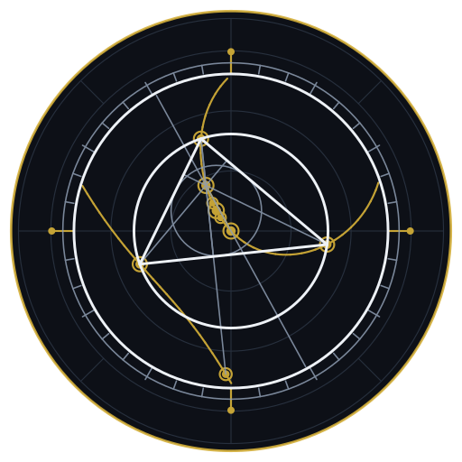

Catalogue of Triangle Cubics¶

Inspired by Bernard Gibert’s Catalogue of Triangle Cubics (CTC), this digital edition models classical pivotal, non-pivotal, and central triangle cubics as atomic, one-item-per-page symbolic constructions in exact SymPy algebra. Every curve—from the Neuberg cubic (K001) and Thomson cubic (K002) onward—is paired with calibrated vector diagrams and cross-referenced directly to Kimberling’s Encyclopedia of Triangle Centers (ETC).
Catalog & Symbolic Toolkit¶
Mathematical Catalog · K001–K011 · Book Codex
Catalogue of Triangle Cubics — Inspect each cataloged cubic on its own standalone page with formal enunciation, conjugacy class, pole and pivot centers, calibrated vector locus over a scalene reference triangle $ABC$, and verified SymPy equations.
Python Toolkit · CLI & Symbolic Verification
Exact SymPy Cubic Engine — Build and verify triangle cubics programmatically via geometor.gibert, explore runnable demonstration notebooks, and inspect the structured catalog manifests and concordance registries.
Key Features¶
Exact Barycentric & Isogonal Algebra
Every cubic’s pole, pivot, and characteristic equation is verified symbolically in SymPy with zero floating-point drift.
Calibrated SVG Locus Plates
Each curve renders on a scalene reference triangle alongside circumcircle guides and verified Kimberling triangle centers.
ETC Center Concordance
Poles, pivots, and distinguished points on every cubic link directly to their corresponding entries in the GEOMETOR Encyclopedia of Triangle Centers edition.
Reference & Project¶
Scholarly Apparatus
Bibliography — Bernard Gibert’s CTC archive, primary treatises, and triangle geometry references
Glossary — Definitions of pivotal cubics, isogonal and isotomic conjugates, and barycentric invariants
Catalog Index — Complete listing of cataloged
K-series cubics
About This Project
About This Edition — Scope, symbolic architecture, and repository layout
Using This Edition — CLI commands, test verification, and local build workflow
Research Log, Changelog & Connect — Development notes and community links